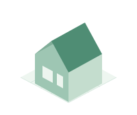
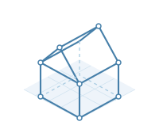
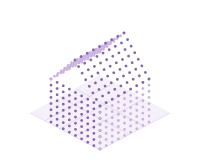
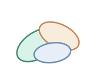
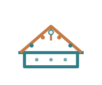

3D DATA WORKSPACE
为每一种三维数据，
找到合适的视角。
在浏览器中查看网格模型、线框、点云与高斯泼溅，也可绘制和修订点云。
支持属性编辑、几何计算与导出，数据始终留在本机。
01 / MESH

网格模型查看器
选择 OBJ 网格，检查表面、轮廓与整体形态。
02 / WIREFRAME

线框查看器
按对象目录分组浏览 OBJ，可叠加点云并排比较。
03 / POINT CLOUD

点云查看器
叠加多个点云，按文件、强度、RGB 或数值字段着色。
04 / GAUSSIAN

高斯泼溅
查看训练得到的三维高斯，沿用项目、相机与截图。
05 / GENERATE

点云创作与修订
绘制线、面与体生成点云，或导入已有数据，选择、裁剪与精修。
06 / CAD
打开 CAD
在独立 CAD 应用中预览图纸、模型与二维绘图。文件不会自动传送。
开始使用1 选择查看工具→2 手动打开数据文件夹→3 选择需要预览的数据